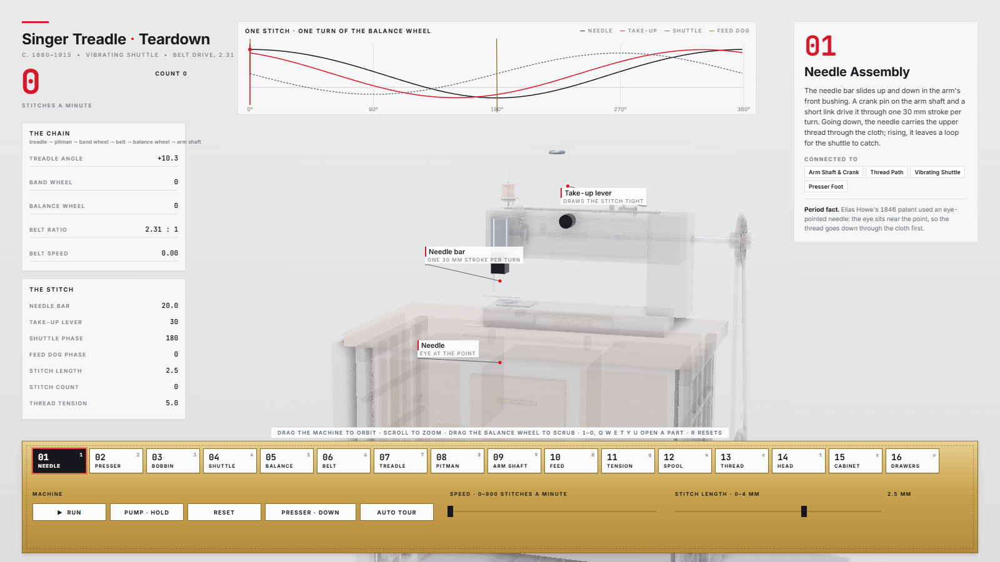

01
Needle Assembly
vertical, rotated to show the clamp
The needle bar slides up and down in the arm's front bushing. A crank pin on the arm shaft and a short link drive it through one 30 mm stroke per turn. Going down, the needle carries the upper thread through the cloth; rising, it leaves a loop for the shuttle to catch.
Period fact. Elias Howe's 1846 patent used an eye-pointed needle: the eye sits near the point, so the thread goes down through the cloth first.
Connected to Arm Shaft & Crank, Thread Path, Vibrating Shuttle, Presser Foot